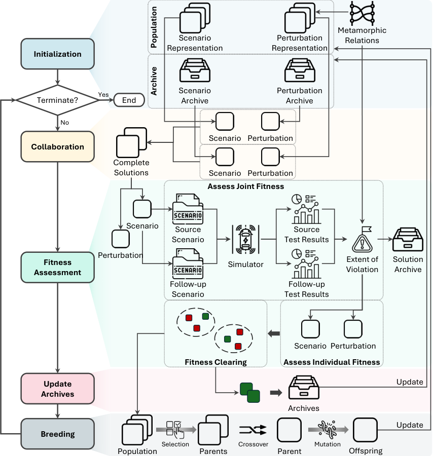
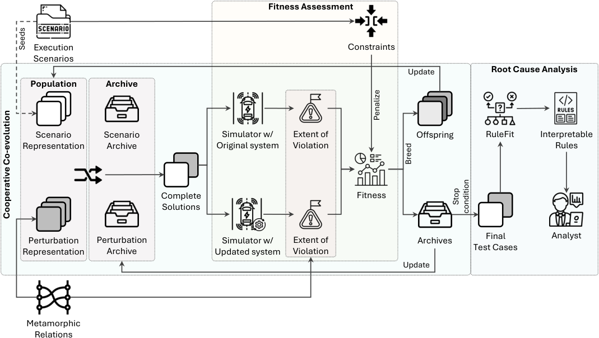

Two methods, one framework
CoCoMEGA combines Cooperative Co-Evolutionary Algorithms (CCEAs) with Metamorphic Testing (MT) to find test scenarios that violate Metamorphic Relations (MRs). CoCoMagic extends it with Differential Testing (DT), constraints, and an interpretability step, to expose behavioural differences between two versions of the same system.
Co-evolutionary search
Scenarios and metamorphic perturbations evolve in separate populations and collaborate to form complete test cases.
Differential testing
CoCoMagic runs each test case on an original and an updated system and maximises the difference in MR violations.
Interpretability
RuleFit extracts human-readable rules from the final test cases to help diagnose why versions diverge.
Extensible domains
A CARLA + InterFuser implementation, a sorting example, and a domain template for plugging in other systems.
CoCoMEGA: Using Cooperative Co-Evolutionary Search to Generate Metamorphic Test Cases for Autonomous Driving SystemsIEEE Transactions on Software Engineering, vol. 51, no. 6, pp. 1882–1911, June 2025
Autonomous Driving Systems (ADSs) rely on Deep Neural Networks, allowing vehicles to navigate complex, open environments. However, the unpredictability of these scenarios highlights the need for rigorous system-level testing to ensure safety, a task usually performed with a simulator in the loop. Though one important goal of such testing is to detect safety violations, there are many undesirable system behaviors, that may not immediately lead to violations, that testing should also be focusing on, thus detecting more subtle problems and enabling a finer-grained analysis.
This paper introduces Cooperative Co-evolutionary MEtamorphic test Generator for Autonomous systems (CoCoMEGA), a novel automated testing framework aimed at advancing system-level safety assessments of ADSs. CoCoMEGA combines Metamorphic Testing (MT) with a search-based approach utilizing Cooperative Co-Evolutionary Algorithms (CCEA) to efficiently generate a diverse set of test cases. CoCoMEGA emphasizes the identification of test scenarios that present undesirable system behavior, that may eventually lead to safety violations, captured by Metamorphic Relations (MRs).
When evaluated within the CARLA simulation environment on the Interfuser ADS, CoCoMEGA consistently outperforms baseline methods, demonstrating enhanced effectiveness and efficiency in generating severe, diverse MR violations and achieving broader exploration of the test space. These results underscore CoCoMEGA as a promising, more scalable solution to the inherent challenges in ADS testing with a simulator in the loop.

CoCoMagic: Constrained Co-evolutionary Differential Metamorphic Testing for Autonomous Systems with an Interpretability ApproachACM Transactions on Software Engineering and Methodology, June 2026
Autonomous systems, such as autonomous driving systems, evolve rapidly through frequent updates, risking unintended behavioral degradations. Effective system-level testing is challenging due to the vast scenario space, the absence of reliable test oracles, and the need for practically applicable and interpretable test cases.
We present CoCoMagic, a novel automated test case generation method that combines metamorphic testing, differential testing, and advanced search-based techniques to identify behavioral divergences between versions of autonomous systems. CoCoMagic formulates test generation as a constrained cooperative co-evolutionary search, evolving both source scenarios and metamorphic perturbations to maximize differences in violations of predefined metamorphic relations across versions. Constraints and population initialization strategies guide the search toward realistic, relevant scenarios. An integrated interpretability approach aids in diagnosing the root causes of divergences.
We evaluate CoCoMagic on an end-to-end ADS, InterFuser, within the Carla virtual simulator. Results show significant improvements over baseline search methods, identifying up to 287% more distinct high-severity behavioral differences while maintaining scenario realism. The interpretability approach provides actionable insights for developers, supporting targeted debugging and safety assessment.

Folder structure
The main branch holds the modular framework: domain-independent search code in impl/core, with the autonomous-driving domain and a small sorting example built on top of it.
conf/ # General configuration and logging defaults docs/ # Sphinx documentation (installation, usage, architecture) impl/ ├── __main__.py # Command-line entry point ├── core/ # Search algorithms (CCEA, GA, random) and shared abstractions ├── ads/ # CARLA and InterFuser integration ├── sorting/ # Sorting domain example └── domain_template/ # Template for adding a new domain test/ # Test modules extra/ ├── illustrative_example/ # Example scenario screenshots └── questionnaire_analysis/ # Notebooks for the interpretability questionnaire questionnaire/ # Web questionnaire used in the user study (index.html, rules.js) scripts/ # Re-evaluation / false-positive analysis script Dockerfile # Container image for running experiments requirements.txt # Python dependencies
To build the documentation: pip install sphinx sphinx-rtd-theme, then cd docs && make html (requires Graphviz dot on PATH), and open docs/_build/html/index.html.
Branches
Feature branches trace how the framework grew, from the first CoCoMEGA search loop in 2024 to differential testing, runtime data collection, interpretability, and the modular redesign. All except the CoCoMEGA-v1.1 release line are fully merged into main.
| Branch | Last update | Status | What it contains |
|---|---|---|---|
main | 2026-09-29 | default | Current framework with CoCoMEGA and CoCoMagic, modular domains, documentation, and replication material. |
scenic | 2025-10-14 | merged | Scenic simulation support with CARLA town maps; fixed trajectory length and better junction handling. |
interpretation | 2025-08-13 | merged | Interpretability / root-cause analysis with RuleFit and the RQ4 explanation notebook. |
modularization | 2025-06-10 | merged | Refactor into a modular domain design; adds the domain template and the sorting example domain. |
CoCoMEGA-v1.1 | 2025-05-05 | 5 ahead | CoCoMEGA release line: docstrings, variable comments, MOSA removed, updated README and results. |
random_trajectory | 2025-04-15 | merged | Random trajectory generation for scenarios and runtime-to-scenario conversion. |
config-optimization | 2025-04-14 | merged | Simplified differential fitness, refined violation extent, and configuration serialization fixes. |
runtime_collect | 2025-04-07 | merged | Runtime data collection with route limits, checkpoints, and configurable collection intervals. |
update_runtime_collection | 2025-03-20 | merged | Mid-route runtime collection, simulation video recording, and effectiveness / efficiency comparisons. |
train_fix | 2025-01-19 | merged | Configurable route types for data collection, parallel execution, and weather configuration. |
runtime | 2024-12-16 | merged | First runtime data collector for simulations. |
differential-testing-evaluation | 2024-12-05 | merged | Base differential-testing logic (groundwork for CoCoMagic) and the APD metric. |
invalid_handling | 2024-06-24 | merged | Actor marking in perturbations, a trajectory heuristic, and handling of invalid solutions. |
enable-autopilot | 2024-06-05 | merged | Autopilot for surrounding vehicles through the CARLA Traffic Manager. |
collision_detection | 2024-06-02 | merged | Collision criterion and additional leaderboard scenarios. |
leaderboard_factory | 2024-05-27 | merged | LeaderBoardFactory scenario generation; trajectories as a start point plus turn direction. |
adjust_z | 2024-05-26 | merged | Static-object height from CARLA waypoints; adding and deleting actors during mutation. |
pert_boundary | 2024-05-26 | merged | Perturbation boundary test with checkpoint-based resume. |
closest_within_pov | 2024-05-21 | merged | Field-of-view distance to the nearest vehicle visible to the ego vehicle. |
refactoring | 2024-05-07 | merged | Refactored CARLA setup, weather reset, and game-time handling; route indexer removed. |
identical_violation | 2024-04-28 | merged | Identical-violation test across repeated experiments. |
trajectory_collision_score | 2024-04-18 | merged | Trajectory collision score and an initialization selection factor. |
visualization | 2024-04-17 | merged | Statistics visualization and velocity in scenario results. |
handle_invalid_solutions | 2024-04-15 | merged | Early exception management and evaluated-scenario handling in the simulation runner. |
“Ahead” counts commits on the branch that are not in main. Switch with git checkout <branch>.
Cite the papers
If you use CoCoMEGA, please cite:
@article{yousefizadeh2025using,
author = {Hossein Yousefizadeh and Shenghui Gu and Lionel C. Briand and Ali Nasr},
title = {Using Cooperative Co-Evolutionary Search to Generate Metamorphic Test Cases for Autonomous Driving Systems},
journal = {{IEEE} Transactions on Software Engineering},
year = 2025,
month = jun,
volume = {51},
number = {6},
pages = {1882--1911},
publisher = {Institute of Electrical and Electronics Engineers ({IEEE})},
doi = {10.1109/tse.2025.3570897},
url = {http://doi.org/10.1109/TSE.2025.3570897}
}
If you use CoCoMagic, please cite:
@article{yousefizadeh2026constrained,
author = {Hossein Yousefizadeh and Shenghui Gu and Lionel C. Briand and Ali Nasr},
title = {Constrained Co-evolutionary Differential Metamorphic Testing for Autonomous Systems with an Interpretability Approach},
journal = {{ACM} Transactions on Software Engineering and Methodology},
year = 2026,
month = jun,
publisher = {Association for Computing Machinery ({ACM})},
doi = {10.1145/3821438},
url = {https://doi.org/10.1145/3821438}
}